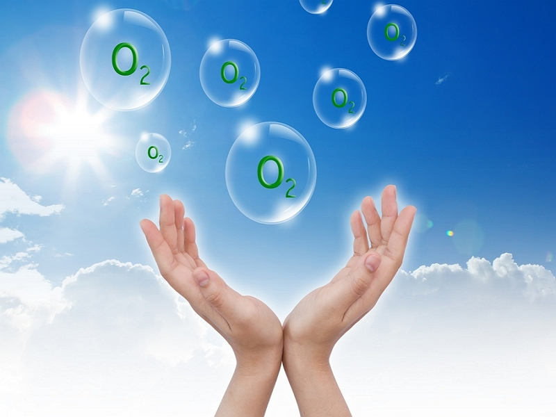

„Mars je postao nekakva mitska arena na koju smo mi Zemljani projektovali svoje nade i strahovanja.” - Karl
Sejgan
Dva meseca
Mars ima dva meseca, Fobosa i Deimosa. Fobos sviće na zapadu i zalazi na istoku dva puta nedeljno, a Deimosu
treba 27 dana da svane na istoku i zađe na zapadu. Razlog se krije u tome što ova nebeska tela nisu
sferičnog oblika.
Gravitacija na Marsu
Bez gravitacije, naše kosti gube minerale koji mogu dovesti do brojnih oboljenja. Mars ima samo trećinu
gravitacije Zemlje,
što bi značilo da ukoliko na crvenoj planeti ne bismo redovno vežbali, gubili bismo snagu
u mišićima i imali bismo kardiovaskularna oboljenja.
Marsovski okean
Na Marsu je postojao okean koji je prekrivao skoro polovinu severne hemisfere.
Sadržao je oko 20 miliona kubnih kilometara vode, mnogo više nego što sadrži Severni ledeni
okean.Vremenom, Mars se hladio i okean se zaledio. Međutim, 13% vode je ostalo i “zaključano” je na polarnim
kapama Marsa.
Polarne kape
Mars je jedina planeta, pored Zemlje, koja ima polarne ledene kape. Severna kapa se naziva Planum Boreum, a
južna Planum Australe. Ispod ovih kapa je pronađena i zaleđena voda.
Plavi sumrak
Zbog fine prašine koja stvara tanki omotač oko atmosfere na Marsu, plava svetla efikasnije prolaze i stižu
na
površinu planete. Stoga, boja sunčevih zrakova, naročito kada je Sunce na horizontu, jeste plava.
Peščane oluje
Peščane oluje na Marsu su neuporedivo veće od onih na našoj planeti. Dostižu visinu od pet kilometara,
preprivajući sve osim najviših planinskih vrhova.
Najviša planina na Marsu
Na crvenoj planeti nalazi se najviši planinski vrh u Sunčevom sistemu. U pitanju je Mont Olimpus sa
fantastičnih 21.229
metra visine.

Kiseonik na kašičicu
Mars ima tako malo slobodnog kiseonika u atmosferi da bi vam, kada biste pokušali da udahnete na njegovoj
površini,
trebalo 14.500 udisaja ne biste li dobili onoliko kiseonika kao prilikom jednog hvatanja vazduha na Zemlji.
Kanjon Vales Marineris
Na Marsu se nalazi najduža dolina u Sunčevom sistemu, Vales Marineris, dugačka skoro 4.000, široka 600 a
duboka i do 8km.
Poređenja radi,Grand Kanjon u Arizoni je 800km dugačak, 30km širok i dubok oko 1,2km.
Curiosity
Rover Curiosity točkova istražuje Mars od 2012. godine otkada je prešao 18,7 kilometara.
Cilj misije, vredne oko 2,5 milijardi dolara, jeste da otkrije mesto na kome su mikroorganizmi nekada mogli
da se razviju.